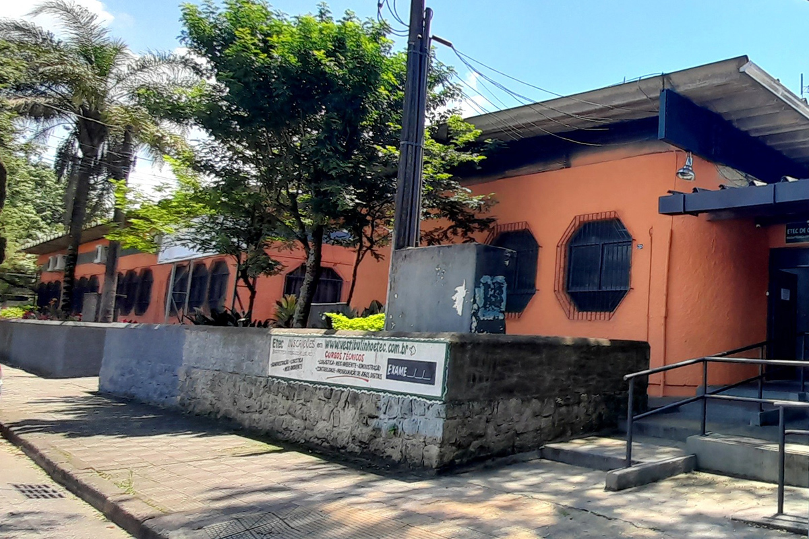

Meu primeiro post - Sobre mim
Publicado em 08/10/2025
Olá! 👋 Bem-vindo ao meu primeiro post no blog BitLovers.
Olá a todos que estiverem a ler essa postagem! Estarei falando um pouco sobre os meus cursos na Etec de Cubatão.
No final do meu ensino fundamental, eu não tinha certeza em que área eu queria seguir, até que eu ouvir falar da Etec, uma escola técnica, onde você pode fazer o ensino médio e estudar o curso de sua escolha em uma área de interesse, ao escutar sobre isso, estudei sobre alguns cursos...
No meu primeiro vestibulinho, a Etec havia inaugurado dois novos cursos, os cursos de Recursos Humanos e Informática, na época, eu não possuia interesse em Informática e acabei optando por RH pelo fato de ser de tarde e ter o interesse em direito trabalhista.
Passei em Recursos Humanos e entrei no ensino médio da Etec, eu possuia aulas do componente de API com dois professores de informática, em especial, Robson Escotiel, que me incentivou a fazer informática e prestei pela segunda vez a prova e passei no curso técnico de Informática.
Atualmente, estou no segundo ano do ensino médio integrado ao curso técnico de Recursos Humanos e segundo módulo do técnico em Informática, a área que planejo atuar.